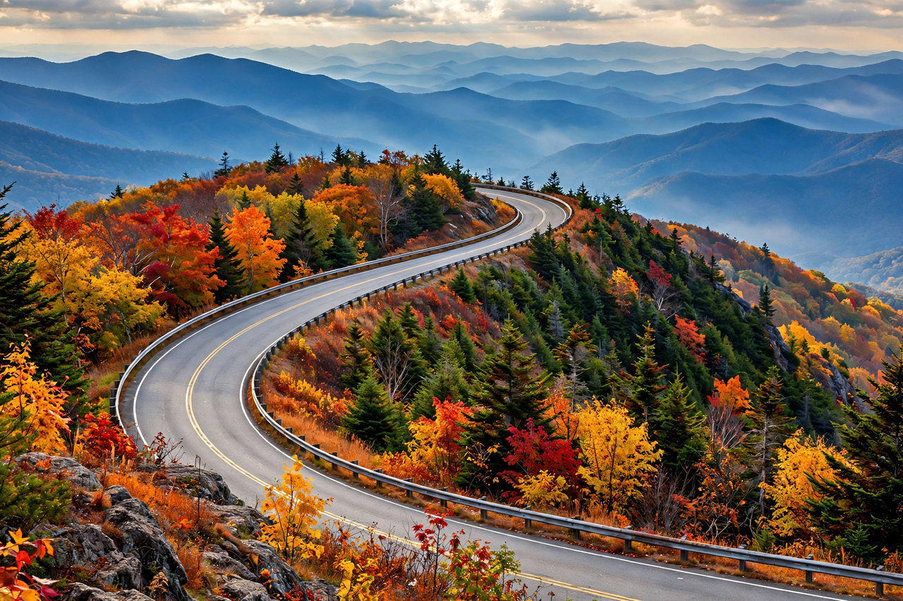

Scenic highway in Virginia and North Carolina, United States
| Blue Ridge Parkway | |
|---|---|
 The parkway along the Blue Ridge, famed for its layered vistas | |
| Length | 469 mi (755 km) |
| Route | Shenandoah National Park (Virginia) to Great Smoky Mountains National Park (North Carolina) |
| Established | 1936 (construction); completed 1987 |
| Maintained by | National Park Service |
The Blue Ridge Parkway is a National Parkway and All-American Road in the United States, noted for its scenic beauty. It runs for 469 miles (755 km) through Virginia and North Carolina, linking Shenandoah National Park to Great Smoky Mountains National Park along the crest of the Blue Ridge, the eastern front range of the Appalachian Mountains. It is the longest linear park in the United States and frequently the National Park Service's most visited unit.
The parkway follows mountain ridges at elevations from about 650 to over 6,000 feet, passing near Mount Mitchell, the highest peak in the eastern United States. Built for leisurely recreational driving at a maximum 45 mph, it has no direct interchanges with major highways and is closed to commercial traffic. Landmarks include Mabry Mill, the Linn Cove Viaduct — the final section completed, in 1987, engineered to preserve the fragile slope of Grandfather Mountain — and hundreds of overlooks, trails, and historic structures. Mileposts run from mile 0 at Rockfish Gap, Virginia, to mile 469 near Cherokee, North Carolina.
Construction began in 1935 as a New Deal public works project championed by Senator Harry Byrd of Virginia, employing Civilian Conservation Corps crews and private contractors. Work continued in segments for over fifty years. The parkway protects not only mountain scenery but also Appalachian cultural heritage, including pioneer cabins, gristmills, and split-rail fences preserved along the corridor.
The route traverses an exceptional range of habitats and is celebrated for spring wildflowers and autumn colour, with over 1,600 plant species, including flame azalea, rhododendron, and dogwood.